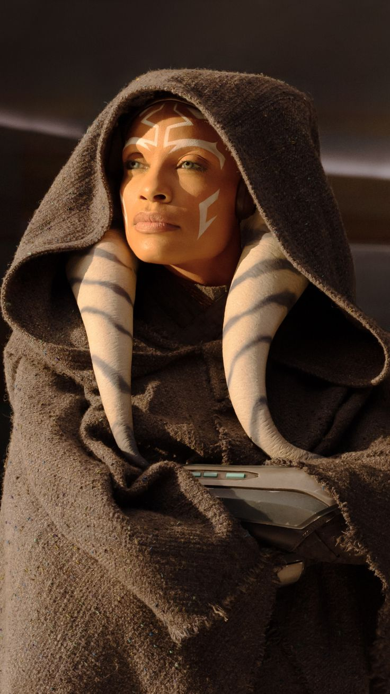
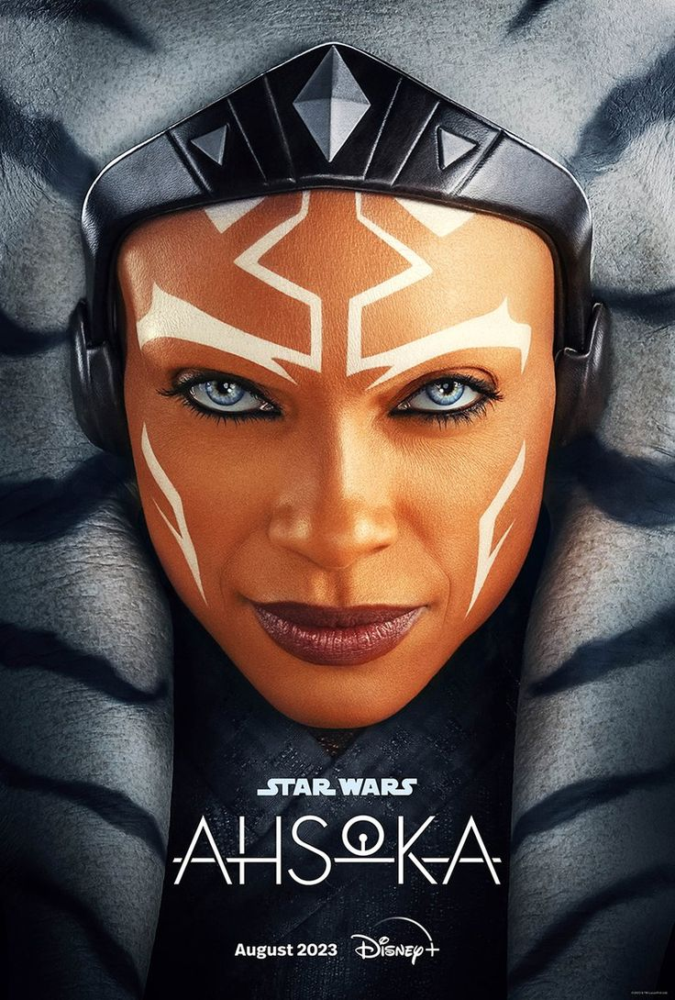

Ahsoka

{kind=link}
Ahsoka Tano est un personnage de Star Wars. Originaire de la planète Shili, elle est amenée dès l'enfance sur Coruscant afin d'être formée en tant que Jedi. Au début de la Guerre des clones, Ahsoka devient l'apprentie d'Anakin Skywalker et participe à de nombreuses batailles. Durant la deuxième année de guerre, elle est accusée d'un meurtre qu'elle n'a pas commis et quitte finalement l'ordre Jedi bien qu'elle ait été innocentée.
Après la transformation de la République galactique en un Empire autoritaire et l'élimination de l'ordre Jedi, Ahsoka rejoint un réseau de cellules rebelles dont elle devient un élément important. Sous le nom de code Fulcrum, elle fournit des renseignements à diverses factions rebelles. Sa lutte contre l'Empire lui permet de retrouver Skywalker, qui est devenu entre-temps le Seigneur noir des Sith Dark Vador. Lors d'un combat contre son ancien maître, ce dernier s'apprête à tuer Ahsoka. Elle est sauvée au dernier moment par Ezra Bridger, un apprenti Jedi.
 Elle est créée par George Lucas, le créateur de Star Wars, pour le film d'animation Star Wars: The Clone Wars et la série télévisée du même nom. Par la suite, le personnage intègre les séries Star Wars Rebels, Forces du destin et Tales of the Jedi. C'est l'actrice américaine Ashley Eckstein qui prête sa voix à Ahsoka dans la version originale.
{kind=link}
En plus des mises en roman de plusieurs épisodes de The Clone Wars et Rebels, Ahsoka apparaît dans de nombreux romans, bandes dessinées, guides, jeux vidéo et figurines, ainsi que dans les séries télévisées The Mandalorian, Le Livre de Boba Fett puis en personnage principal de Ahsoka où elle est interprétée par Rosario Dawson.
Le personnage d'Ahsoka a généralement été bien reçu par les critiques et est considéré comme l'un des personnages féminins les plus importants de la saga.